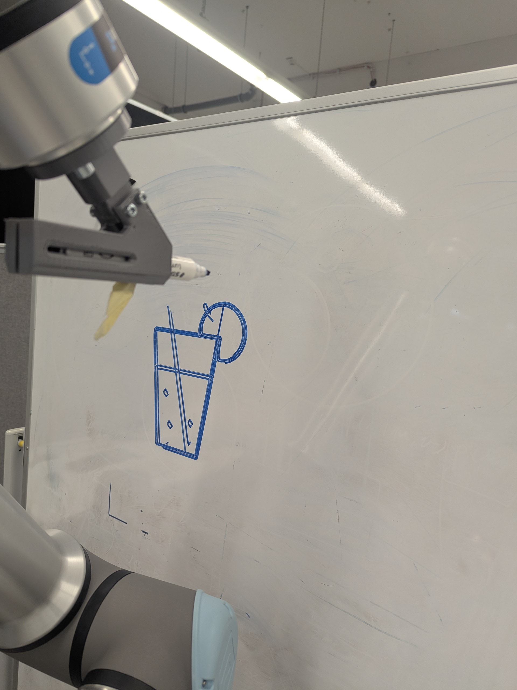

Projects
Two robotics demos on a whiteboard: drawing from SVG and erasing a defined area.
Project 1
DrawBot — Drawing shapes from SVG on a whiteboard
Used RoboDK with a UR10e to draw shapes generated from SVG paths (circle, gear, spaceship, and more).



Key points
- Converted SVG drawings into robot trajectories.
- Validated multiple drawings through repeated runs.
- Delivered a documented, runnable project setup.
Stack
RoboDK • UR10e • SVG-based path planning
Project 2
PolishBot — Erasing a drawing from the surface
Implemented an erase routine by teaching a wipe trajectory and replaying it reliably to clean a defined area.

Key points
- Taught the trajectory once, then executed consistent erasing runs.
- Integrated the control workflow using a Franka interface with ROS 2.
- Kept the system robust by using a repeatable, testable motion routine.
Stack
Franka • ROS 2 • taught trajectory + replay